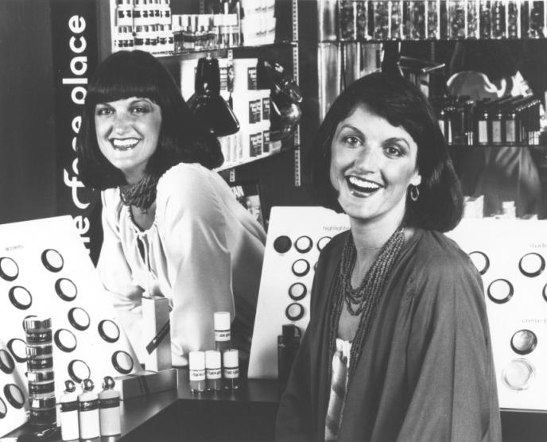

홈 > 브랜드 매거진 > 베네피트
베네피트
베네핏 코스메틱스(Benefit Cosmetics)는 1976년 쌍둥이 자매 진·제인 포드가 미국 샌프란시스코에서 창업한 화장품 브랜드로, 1999년 LVMH가 인수해 산하 브랜드로 운영하고 있다.
산업 분야 뷰티·퍼스널케어 · 공개 등급 편집 검수 · 브랜드 평가 4.7 ★


한눈에 보는 브랜드
베네핏 코스메틱스(Benefit Cosmetics)는 1976년 쌍둥이 자매 진 포드(Jean Ford)와 제인 포드(Jane Ford)가 미국 샌프란시스코에서 창업한 화장품 브랜드다. 설립 초기에는 '더 페이스 플레이스(The Face Place)'라는 이름으로 운영되다 1990년 베네핏 코스메틱스로 재출범했다.
1999년 9월 LVMH가 인수해 현재까지 산하 브랜드로 운영되고 있다.
브랜드 관점
베네피트는 화장품 전 영역을 노리는 대신 눈썹과 마스카라라는 좁은 카테고리를 장악하는 전략으로 차별화했다. 세계 1위 브로우 브랜드로 50여개국에 3,000여개 브로우바를 운영하며, 메이크업 제품 판매와 매장 내 눈썹 왁싱·셰이핑 서비스를 결합한 점이 로레알·에스티로더 산하 색조 브랜드와 구분되는 지점이다.
1999년 LVMH 인수 이후 글로벌 유통망을 확보했고, 최근 5년간 매출이 세 배로 늘며 연 10억 달러 돌파를 앞두고 있다. 마스카라는 미국·영국·캐나다 프레스티지 시장 1위로 전 세계에서 4초당 1개가 팔리며, 2025년 볼륨 특화 신제품 배드걸 바운스를 세포라·얼타 등 미국 전 채널에 투입해 마스카라 우위를 강화했다.
한국에서는 올리브영을 통해 프리사이슬리 마이 브로우 펜슬을 비롯한 핵심 라인을 유통하며, 슬림 브로우 펜슬의 원조라는 위치를 활용해 눈썹 카테고리에서 입지를 다지고 있다.
시작과 성장
베네피트의 창립자인 진과 제인은 1976년 샌프란시스코의 작은 메이크업 부티크, 더 페이스 플레이스를 오픈했다. 이를 시초로 1990년에 베네피트를 론칭했으며, 까다로운 뷰티 고민을 빠르게 해결해주는 기능성 메이크업을 컨셉으로 재기발랄한 글로벌 메이크업 브랜드로 거듭났다.
브랜드 아이덴티티
브랜드 정체성은 복고풍과 위트 있는 유머를 결합한 경쾌하고 장난기 넘치는 감성을 핵심으로 한다. 패키징은 1950년대풍 식료품 디자인을 재해석한 복고 모티프와 화사한 색감을 즐겨 사용하며, 제품명에도 말장난을 활용한 유쾌한 톤이 일관되게 적용된다.
시각 정체성에서 핑크가 주요 브랜드 컬러로 정의되어 있으나, 구체적 색상 코드와 사용 서체는 공개 자료로 확인되지 않는다.
제품과 서비스
대표 제품은 세계 최다 판매 눈썹 펜슬인 프리사이슬리 마이 브로우 펜슬로 12가지 색상을 갖춘 슬림 펜슬의 원조다. 데어즈 리얼!
렝스닝 마스카라와 2025년 출시한 배드걸 바운스가 마스카라 라인을 이끌고, 1976년 댄서용으로 만든 장미빛 베네틴트는 1천만병 넘게 팔린 입술·볼 틴트 스테디셀러다. 매트 피니시의 훌라 브론저, 김미 브로우 플러스 눈썹 젤, 구프 프루프 방수 펜슬, 풀업 브로우 왁스 등으로 눈썹·볼·속눈썹 중심 라인을 구성하며, 매장 브로우바의 왁싱 서비스가 제품군과 연결된다.
현재 상태
현재 베네핏 코스메틱스는 LVMH 산하 브랜드로 샌프란시스코에 본사를 두고 있으며, 백화점·세포라 등 전문 유통 채널을 통해 전 세계에 판매되고 있다.
타임라인
BI/CI 변천사
함께 읽을 브랜드
 뷰티·퍼스널케어 · 디렉토리올리브영
뷰티·퍼스널케어 · 디렉토리올리브영올리브영은 대한민국의 헬스앤뷰티 리테일 브랜드입니다. 화장품, 스킨케어, 건강식품, 퍼스널케어 상품을 큐레이션하며 K뷰티 유통의 대표 접점으로 자리 잡았습니다.
 뷰티·퍼스널케어 · 자료 기반더페이스샵
뷰티·퍼스널케어 · 자료 기반더페이스샵더페이스샵(The Face Shop)은 LG생활건강 계열의 자연주의 로드숍 화장품 브랜드로, 2003년 론칭했다.
 뷰티·퍼스널케어 · 자료 기반코스맥스
뷰티·퍼스널케어 · 자료 기반코스맥스코스맥스(COSMAX)는 1992년 설립된 한국의 화장품 ODM 기업으로, 세계 1위 화장품 ODM 제조사로 꼽힌다.
 뷰티·퍼스널케어 · 자료 기반미샤
뷰티·퍼스널케어 · 자료 기반미샤미샤(MISSHA)는 에이블씨엔씨가 운영하는 한국의 로드숍 화장품 브랜드로, 2000년 온라인 브랜드로 시작됐다.
 뷰티·퍼스널케어 · 매거진 완성러쉬
뷰티·퍼스널케어 · 매거진 완성러쉬러쉬는 영국의 뷰티·퍼스널케어 브랜드로, 성분, 사용감, 패키지, 이미지 언어가 구매 판단에 직접 연결되는 영역입니다.
RN
롬앤
뷰티·퍼스널케어 · 자료 기반롬앤롬앤(rom&nd)은 아이패밀리에스씨가 2016년 론칭한 대한민국의 색조 화장품 브랜드다. 립틴트·아이섀도를 중심으로 10·20대에게 인기를 얻은 메이크업 브랜드다.
 뷰티·퍼스널케어 · 자료 기반에뛰드
뷰티·퍼스널케어 · 자료 기반에뛰드에뛰드(ETUDE)는 아모레퍼시픽그룹 계열의 색조 메이크업 중심 화장품 브랜드다.
 뷰티·퍼스널케어 · 편집 검수니베아
뷰티·퍼스널케어 · 편집 검수니베아니베아(NIVEA)는 1911년 독일 바이어스도르프(Beiersdorf)가 출시한 글로벌 스킨케어 브랜드다. 세계 최초의 안정적인 유중수(油中水) 유화 크림을 선보이...